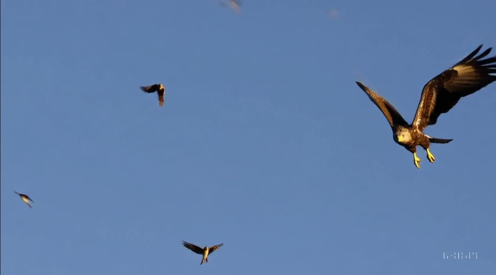

✂️ Sora Re-cut 기능 마스터하기
긴 영상에서 가장 빛나는 순간만 잘라내어 새로운 하이라이트 클립으로 재구성하는 'Re-cut' 기능을 배워보세요. 영상의 불필요한 부분을 제거하고 핵심 장면을 강조할 수 있는 강력한 도구입니다.
Re-cut 기능이란?
Re-cut은 '선택과 집중'을 위한 기능입니다. 이미 생성된 영상에서 사용자가 원하는 특정 '순간'을 포착하여, 그 순간을 중심으로 새로운 영상을 재구성합니다.
주요 특징
- 핵심: 영상의 특정 구간을 잘라내고(Cut), 앞뒤로 확장하여 재구성(Re-create)
- 장점: 불필요한 부분을 제거하고, 가장 중요한 하이라이트 장면을 강조
- 원리: 선택한 구간의 시각적 스타일과 맥락을 분석하여 AI가 앞뒤 장면을 새롭게 생성
- 활용: 광고, 쇼릴, 하이라이트 영상 제작에 최적화
실습 예제: 독수리 클로즈업 영상 만들기
미션: 여러 마리의 새 영상에서 독수리만 클로즈업하기
긴 영상에서 원하는 부분만 정확히 잘라내어 새로운 영상을 만드는 과정을 확인해보세요.
1단계: 기준 영상 생성
먼저, 여러 피사체가 포함된 긴 영상을 생성합니다.
"Many different birds, including eagles, sparrows, and pigeons, flying together in a clear blue sky."

2-3단계: Re-cut 적용 및 결과
생성된 영상에서 Re-cut 버튼을 클릭하고, 타임라인에서 독수리가 가장 멋지게 날갯짓하는 2초 구간만 정확히 선택합니다.
선택한 구간을 앞뒤로 확장하도록 설정하면, Sora가 해당 장면을 중심으로 새로운 영상을 만들어냅니다.
결과: 독수리 한 마리만 클로즈업되어 나는 하이라이트 영상
주의사항 및 PRO-TIP
⚠️ 주의사항
- 핵심 순간을 정확히 선택: 결과물의 품질은 어떤 순간을 선택하느냐에 따라 크게 달라집니다. 가장 품질이 좋고 강조하고 싶은 장면을 프레임 단위로 정확하게 선택하세요.
- 확장 방향을 명확히: 선택한 구간을 기준으로 앞부분만 확장할지, 뒷부분만 확장할지, 양쪽 모두 확장할지 의도를 명확히 설정해야 합니다.
- 스타일 일관성 유지: Re-cut은 선택된 구간의 시각적 스타일을 그대로 유지하며 확장합니다.
💡 PRO-TIP
- Loop 기능과 연계: Re-cut으로 하이라이트 장면을 만든 후, Loop 기능으로 처리하면 끊김 없이 반복되는 멋진 '움짤'을 만들 수 있습니다.
- 다중 Re-cut: 하나의 영상에서 여러 구간을 Re-cut하여 다양한 버전의 하이라이트를 만들어보세요.
- 타이밍이 핵심: 액션이나 감정이 절정에 달하는 순간을 포착하는 것이 가장 효과적입니다.